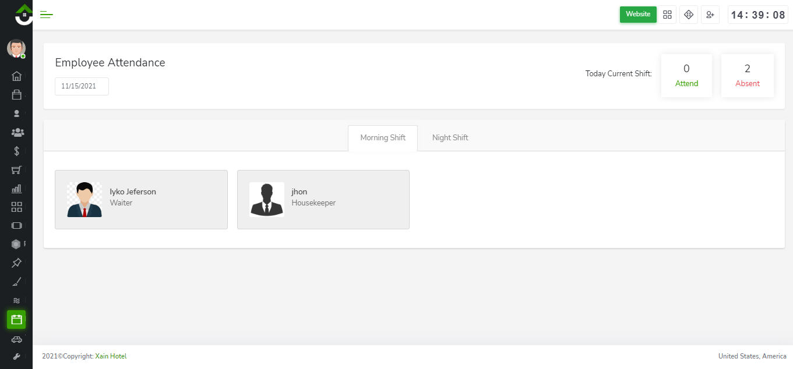
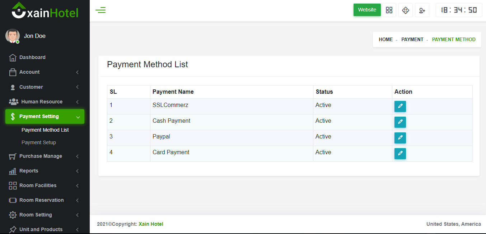

Dokumentasi Sistem
Anda dapat membaca dokumentasi ini langkah demi langkah dan kemudian Anda dapat mengaturnya. Anda juga akan mengetahui bagaimana keseluruhan sistem bekerja.
Tentang Aplikasi Hotel
Sistem Manajemen Hotel online kami adalah sebuah aplikasi web. Sistem ini dikembangkan untuk mengotomatisasi aktivitas sehari-hari dari sebuah Hotel. Sistem manajemen Hotel kami akan membantu Anda menjadi lebih teknis teknis seperti melayani, manajemen pendapatan, akuntansi dan manajemen fasilitas. Dan dari admin panel sebagai pengguna admin dapat memantau semuanya.
Fitur Utama AppsHotel
- Menampilkan semua informasi dan menu percakapan di perangkat seluler dengan berbagai ukuran layar. Misalnya laptop, tablet, smartphone. Dan Multi-Bahasa dapat didukung.
- Pada panel admin terdapat dashboard, dimana user dapat dengan mudah mendapatkan informasi mengenai Today Booking, Total Customer, Total Amount, Total Booking, dan lain sebagainya dengan tampilan grafis.
- Admin panel untuk membuat user admin perorangan, di sini admin dapat melakukan operasi create, read, update, edit dan delete pada menu.
- Admin akan dapat membuat pertanyaan-pertanyaan yang bersifat umum dan dapat menambahkan izin akses peran masing-masing pengguna seperti untuk operator, admin, penanggung jawab, dan lain sebagainya.
- Pada modul Role Permission Admin dapat mengatur akses role untuk masing-masing admin/user, contohnya Admin mengatur akses role untuk operator, dan mengatur role untuk operator hanya dapat membaca dashboard, dapat melakukan pengecekan pemesanan kamar dan daftar pelanggan, melakukan update produk, dan dapat melakukan pengiriman Email maupun SMS, dll.
- Admin dapat melihat semua informasi pengguna dan dapat memeriksa aktivitas mereka.
- Dengan sistem ini, Anda dapat mengirim satu atau beberapa SMS ke target pengguna dan pelanggan sekaligus.
- Dengan sistem ini, Anda dapat dengan mudah memeriksa semua Laporan Pemesanan, Pembelian, dan Stok.
- Dengan mudah dapat mencakup, fasilitas kamar, produk dan istilah pengukuran unit produk.
- Dalam sistem ini, Anda akan mendapatkan pengaturan ruangan, dan opsi pengelolaan pembelian produk.
- Dari sistem ini, Anda akan mendapatkan manajemen sumber daya manusia (HRM). Modul HRM akan membantu Anda untuk mengelola orang-orang di perusahaan Anda secara efektif sehingga mereka membantu bisnis Anda mendapatkan keunggulan kompetitif. Sistem ini dirancang untuk memaksimalkan kinerja karyawan dalam melayani tujuan strategis perusahaan.
- Selain itu, Anda juga akan mendapatkan Modul Akun. Ini adalah modul yang mudah digunakan untuk membuat dan mengelola laporan akun dan voucher.
Modul Panel Admin
- Dashboard
- Akun
- Pelanggan
- Sumber Daya Manusia (New)
- Pengaturan Pembayaran (New)
- Kelola Pembelian
- Restoran
- Laporan
- Daftar Tugas (New)
- Fasilitas Kamar
- Reservasi Kamar
- Pengaturan Kamar
- Unit dan Produk
- Tugas Roster
- Pemesanan Kolam Renang
- House keeping
- Pengguna
- Izin Peran
- Bahasa
- Pengaturan Aplikasi
- Pengaturan Web
Manfaat Sistem Manajemen Hotel
Manfaat layanan yang disediakan di hotel dan hubungan antara layanan-layanan tersebut dan mengurangi risiko masalah terkait manajemen. Hal ini akan memberikan berbagai laporan bisnis yang berbeda seperti Laporan Pemesanan, Laporan Pelanggan, Laporan Pembelian Produk, Laporan Stok, Ringkasan Akun, dan banyak lagi. Dan laporan penting harian & bulanan yang berbeda dengan grafik dihasilkan.
Teknologi yang digunakan
TOOLS
- HTML
- CSS
BAHASA
- PHP-CODEIGNITER FRAMEWORK
- javascript
- AJAX
DATABASE
- MYSQL
Persyaratan untuk Sistem Apps Hotel
Pada bagian ini kami akan menyajikan konfigurasi yang direkomendasikan di mana tema akan bekerja dengan sempurna. Itu bukan nilai absolut, kinerja tema tergantung pada banyak faktor seperti kinerja host, konfigurasi peladen dan jumlah pengunjung.
Persyaratan server
Apache atau IIS atau Nginx
PHP version 7.4 or greater (recommended: PHP 7.4 or greater)
MySQL version 5.0 or greater (recommended: MySQL 5.5 or greater)
Persyaratan hosting
Hosting sebenarnya tergantung pada Pengguna Anda. Anda harus menghitung berapa banyak pengunjung yang Anda dapatkan setiap hari. Jika Anda memiliki lebih dari 10.000 pengunjung setiap hari maka kami akan merekomendasikan Anda untuk Beli VPS dari hosting terkenal perusahaan. Kami akan lebih memilih Bluehost perusahaan, karena mereka menyediakan layanan yang sangat cepat.
INSTALASI AppsHotel:
- Silakan Ekstrak folder AppsHotel-Main.zip. Kemudian Anda akan mendapatkan AppsHotel_main.zip dan Folder Dokumentasi, Pertama-tama baca ddokumentasi.
- Sekarang cukup unggah file AppsHotel_main.zip ke server Anda menggunakan cPanel atau FTP.
- Ekstrak file AppsHotel_main.zip
- Sekarang Anda tinggal mengakses ke dalam folder yang telah Anda unggah dan kemudian memindahkan semua folder dan file (misal: application, assets, index.php, install dan folder sistem) satu langkah ke direktori public_html atau dapat membuat folder dan kemudian Anda dapat menyimpannya di folder tersebut. Catatan: Perlu diingat bahwa file .htaccess dipindahkan dengan benar jika tidak, Anda tidak dapat mengakses ke panel admin. #####################
- Note that: instruksi ini akan berlaku untuk semua sistem lainnya. #####################
- Sekarang, Jelajahi aplikasi Andahttp://yourdomain.com/install Jika semua persyaratan berhasil dipenuhi maka klik Dan juga periksa tombol Beli di Anda opsi Unduh envato Anda : https://themeforest.net/downloads
- Installer langkah kedua yang menunjukkan direktori dan persyaratan server.dan server SMTP. Cobalah untuk membuat semuanya ok, awalnya SMTP jika tidak diaktifkan akan berfungsi tetapi untuk pengiriman email Anda harus mengatur server Anda nanti jika tidak email tidak akan terkirim, tetapi Anda dapat menginstal aplikasi sekarang.
- *Masukkan nama basis data, nama pengguna, kata sandi, nama host, dan klik Next button
- Kemudian tunggu selama 60 Detik.
- Sekarang tambahkan nama pengguna dan kata sandi Anda sendiri untuk masuk ke dalam sistem, setelah masuk silakan ubah nama pengguna dan kata sandi.
- Instalasi berhasil dilakukan...
- Sekarang, Klik tombol Klik untuk meluncurkan aplikasi Anda untuk mengakses aplikasi Anda
- Terima kasih telah membeli Sistem AppsHotel.


System Flow Chart:
Pengaturan Proses Perangkat Lunak:-Untuk menyelesaikan pengaturan tampilan situs web dan pengaturan proses perangkat lunak Anda dengan benar, ikuti langkah-langkah berikut:

Pengaturan Proses Bisnis
Untuk menjalankan proses bisnis Anda, ikuti langkah-langkah berikut:

Modul Khusus
Di dalam sistem manajemen hotel ini; terdapat modul Manajemen Sumber Daya Manusia (MSDM).
PEDOMAN SISTEM :
-
*** Catatan: Setiap Pengguna sebagai admin, operator, atau penanggung jawab atau orang lain perlu melakukan Login secara individual.

- Setelah berhasil login, Anda akan masuk ke Dasbor ini. Di Dasbor ini Anda dapat melihat
hari yang sedang berlangsung tidak ada Pemesanan, pelanggan, dan jumlah total rata-rata pendapatan dan pemesanan dan
juga berbagai laporan penting dengan grafik. Sebagai contoh lihat gambar di bawah ini.

-
Tambah Pengguna : Jika Anda ingin menambahkan pengguna baru, klik tombol tambah pengguna, masukkan data pengguna dan klik tombol simpan tombol simpan.
-
Daftar Pengguna: Jika Anda ingin melihat daftar pengguna, klik tombol daftar pengguna, lihat semua data pengguna.
-
Assign Role to User : Di sini, Admin dapat mengatur akses peran untuk setiap admin pengguna, operator, penanggung jawab, manajer, dll. Sebagai contoh, Admin mengatur role akses untuk operator, Contoh: operator hanya dapat membaca dashboard, mengecek pemesanan kamar dan daftar pelanggan, mengupdate produk, dan dapat mengirim Email atau SMS, dll.
Jadi, untuk mengatur izin peran di awal, Anda harus memilih nama peran. Nama peran dapat berupa admin, operator, penanggung jawab, dll. Orang/pengguna. Kemudian harus memilih opsi izin akses peran. Lalu jangan lupa untuk mengklik > tombol Simpan untuk menyimpan data pengaturan Anda. Silakan silahkan ikuti gambar di bawah ini :
-
Daftar Peran : Untuk memeriksa daftar peran dan Anda akan melihat bagan daftar peran dan juga mengedit dan menghapus izin. Lihat tangkapan layar di bawah ini:
-
Menetapkan Peran Kepada Pengguna: Untuk memeriksa Menetapkan Peran Kepada Pengguna dan pilih pengguna dan tetapkan jenis izin dari tombol radio. Lihat tangkapan layar di bawah ini:
-
Daftar Akses Pengguna: Untuk memeriksa Daftar Peran Akses Pengguna dan mengedit peran, buka > modul Izin Peran > lalu klik menu Daftar Peran Akses Pengguna. Lihat tangkapan layar di bawah ini :
-
Bahasa: Jika Anda ingin menetapkan bahasa baru kecuali bahasa Inggris, klik pada tombol bahasa di bawah Pengaturan Perangkat Lunak, masukkan nama bahasa Anda dan simpan.
-
Phrase List: Tekan Phrase button, anda akan diarahkan ke halaman tambah phrase.
-
Pengaturan Email: Untuk mengatur Proses Email situs web Anda. Silakan lihat tangkapan layar di bawah ini:
-
Konfigurasi SMS : Untuk mengatur Konfigurasi SMS Anda. Silakan lihat tangkapan layar di bawah ini:
-
Templat SMS : Untuk mengirim SMS khusus ke pengguna atau pelanggan Anda dengan menggunakan templat khusus Anda. Untuk Membuat Template SMS Anda. Silakan lihat tangkapan layar di bawah ini :
-
Daftar Langganan: Untuk memeriksa Daftar Langganan pengguna dari situs web Anda. Silakan lihat tangkapan layar di bawah ini :
-
Pengaturan Menu : Untuk mengatur daftar menu situs web Anda. Silakan lihat tangkapan layar di bawah ini:
-
Pengaturan Mata Uang: Tambahkan Mata Uang Anda dan tetapkan salah satu mata uang default dan pastikan nilai konversinya adalah 1 karena mata uang lain akan dikonversi dengan mata uang ini, Anda dapat menambahkan beberapa mata uang, Cukup Klik Tombol Tambah Mata Uang. Silakan lihat tangkapan layar di bawah ini:
-
Pengaturan Aplikasi: Silakan lihat tangkapan layar di bawah ini:
-
Pengaturan Umum: Silakan lihat tangkapan layar di bawah ini :
-
Logo Merek: Silakan lihat tangkapan layar di bawah ini:
-
Anggota Tim: Silakan lihat tangkapan layar di bawah ini:
-
Daftar Penghitung: Silakan lihat tangkapan layar di bawah ini :
-
Contact Information Tim: Silakan lihat tangkapan layar di bawah ini:
-
Galeri: Silakan lihat tangkapan layar di bawah ini:
-
Galeri: Silakan lihat tangkapan layar di bawah ini:
-
Slider : Silakan lihat tangkapan layar di bawah ini :
-
Checkout : Silakan lihat tangkapan layar di bawah ini :
-
Footer : Silakan lihat tangkapan layar di bawah ini :
-
Daftar Satuan Produk : Sebelum membeli barang atau produk apapun untuk tujuan akun bisnis Anda, pertama-tama Anda harus menambahkan satuan jenis pengukuran produk. Untuk melakukan itu lihat gambar di bawah ini :
-
List Product : Produk mana yang Anda butuhkan untuk bisnis Anda adalah produk yang dapat Anda tambahkan dan edit di sini. Berikut ini adalah screenshot dari gambar di bawah ini :
-
Hapus Produk : gambar dibawah ini menampilkan list produk yang dapat di hapus dan di edit atau update :
-
Category List : Anda dapat menambahkan kategori produk ke dalam daftar ini. Lihat tangkapan layar di bawah ini :
-
Suplier List : Semua informasi Suplier produk dapat Anda tambahkan dan edit di sini :
-
Pembelian Barang : Di sini Anda akan mendapatkan semua informasi pembelian dan juga dapat menambahkan produk baru. Untuk menambahkan produk baru, jika nama supplier tidak tersedia di menu dropdown, anda dapat menambahkan nama supplier dengan mengklik Add Supplier . detailnya dapat dilihat pada gambar berikut :
-
Tambah Pembelian : Produk mana yang Anda butuhkan untuk bisnis Anda adalah produk yang dapat Anda tambahkan dan edit seperti pada gambar berikut:
-
Pengembalian Pembelian: Untuk mengembalikan produk apa pun, Anda perlu memilih nama supplier dan nomor invoice, klik button search. Setelah itu Anda akan melihat produk yang Anda cari, maka Anda harus mengisi jumlah yang akan dikembalikan. Silakan, Lihat tangkapan layar di bawah ini :
-
Faktur Pengembalian : Semua informasi Pengembalian produk akan Anda dapatkan di sini. Lihat tangkapan layar di bawah ini :
Laporan Pemesanan: Lihat cuplikan layar di bawah ini :
Laporan Pemesanan: Lihat cuplikan layar di bawah ini:
Laporan Stock : Dapat dilihat pada gambar :
Daftar Detail Penerbangan: Lihat tangkapan layar di bawah ini :
Daftar Detail Kendaraan: Lihat tangkapan layar di bawah ini :
Daftar Pemesanan Kendaraan: Lihat tangkapan layar di bawah ini :
Dasbor Absensi: Dapat Dilihat pada tangkapan layar di bawah ini :
Pemberian Pekerjaan : Dapat Dilihat pada tangkapan layar di bawah ini :
Daftar list nama Roster : Dapat Dilihat pada tangkapan layar di bawah ini :
Daftar List Shift: Dapat Dilihat pada tangkapan layar di bawah ini :
POS Invoice : Ini adalah faktur layanan Point of service. Anda dapat membuat pesanan dari sini. Anda dapat melihat semua daftar item makanan, memilih item makanan, select pelanggan, Pelayan, meja, waktu memasak. Anda bisa juga dapat memesan dari sini. Lihat tangkapan layar di bawah ini :
Order List : Anda dapat melihat semua daftar pesanan. Lihat tangkapan layar di bawah ini :
Order Tertunda : Anda dapat melihat semua daftar order yang tertunda. Lihat tangkapan layar di bawah ini :
Order Selesai : YAnda dapat melihat semua daftar order yang selesai. Lihat tangkapan layar di bawah ini :
Order Dibatalkan: Anda dapat melihat semua daftar pesanan yang dibatalkan. Lihat tangkapan layar di bawah ini :
Pengturan POS : Anda dapat memodifikasi pengaturan layanan POS Anda. Lihat tangkapan layar di bawah ini :
Table list : Di bawah kategori restoran, Anda akan menemukan opsi kelola dan setelah mengkliknya, Anda akan melihat opsi daftar tabel. Lihat tangkapan layar di bawah ini :
Customer Type List : Di bawah kategori restoran, Anda akan menemukan opsi tipe pelanggan dan setelah mengkliknya, Anda akan melihat opsi Daftar Jenis Pelanggan. Lihat tangkapan layar di bawah ini :
Card Terminal List : Di bawah kategori restoran, Anda akan menemukan opsi jenis pelanggan dan setelah mengkliknya, Anda akan melihat opsi Daftar Terminal Kartu. Lihat tangkapan layar di bawah ini :
Add Category : Di bawah kategori restoran, Anda akan menemukan Kelola Kategori, dan setelah mengkliknya, Anda akan melihat opsi Tambah Opsi Tambah Kategori. Anda dapat membuat kategori makanan dengan memilih gambar dan membuat penawaran. Lihat tangkapan layar di bawah ini :
Category List : Di bawah kategori restoran, Anda akan menemukan Kelola Kategori, dan setelah mengkliknya, Anda akan melihat opsi Kelola Kategori. Anda dapat melihat semua daftar kategori, mengedit kategori, menghapus kategori dari sini. Lihat tangkapan layar di bawah ini :
Add Food : Di bawah kategori restoran, Anda akan menemukan menu Kelola Makanan, dan setelah mengkliknya, Anda akan melihat opsi Tambahkan Makanan. Anda dapat menambahkan makanan, pilih jenis menu, membuat penawaran dan juga komponen dari sini. Lihat tangkapan layar di bawah ini :
Food List : Di bawah kategori restoran, Anda akan menemukan opsi Kelola Makanan, dan setelah mengkliknya, Anda akan melihat opsi Opsi Daftar Makanan. Anda dapat melihat semua daftar makanan, mengedit item makanan, menghapus item makanan. Lihat tangkapan layar di bawah ini :
Add Group Item : Di bawah kategori restoran, Anda akan menemukan menu Kelola Makanan, dan setelah mengkliknya, Anda akan melihat opsi Tambahkan Item Grup opsi. Lihat tangkapan layar di bawah ini :
Variant List : Di bawah kategori restoran, Anda akan menemukan menu Kelola Makanan, dan setelah mengkliknya, Anda akan melihat opsi Opsi Daftar Varian. Lihat tangkapan layar di bawah ini :
Food Available List : Di bawah kategori restoran, Anda akan menemukan opsi Kelola Makanan, dan setelah mengkliknya, Anda akan melihat opsi Opsi Daftar Makanan yang Tersedia. Lihat tangkapan layar di bawah ini :
Menu Type : Di bawah kategori restoran, Anda akan menemukan menu Kelola Makanan, dan setelah mengkliknya, Anda akan melihat Opsi Jenis Menu. Lihat tangkapan layar di bawah ini :
Add Add-ons : Di bawah kategori restoran, Anda akan menemukan Kelola Pengaya, dan setelah mengkliknya, Anda akan melihat opsi Opsi Pengaya. Anda dapat menambahkan Add-on dan statusnya. Lihat tangkapan layar di bawah ini :
Add-ons List : Di bawah kategori restoran, Anda akan menemukan opsi Kelola Pengaya, dan setelah mengkliknya, Anda akan melihat opsi Opsi Daftar Pengaya. Lihat semua daftar Pengaya. Lihat tangkapan layar di bawah ini :
Add-ons Assign List : Di bawah kategori restoran, Anda akan menemukan opsi Kelola Pengaya, dan setelah mengkliknya, Anda akan melihat opsi Opsi Daftar Pengaya Tetapkan. Anda dapat menambahkan pengaya dengan item makanan. Lihat tangkapan layar di bawah ini :
Booking : Lihat tangkapan layar di bawah ini :
Paket Kolam Renang : Lihat tangkapan layar di bawah ini :
Kolam Renang: Lihat tangkapan layar di bawah ini :
Jenis Kolam Renang : Lihat tangkapan layar di bawah ini :
Gambar Kolam Renang : Lihat tangkapan layar di bawah ini :
Daftar Fasilitas : Lihat tangkapan layar di bawah ini :
Daftar Detail Fasilitas : Lihat tangkapan layar di bawah ini :
Daftar Ukuran Kamar : Lihat tangkapan layar di bawah ini :
Assign Room Cleaning : Lihat tangkapan layar di bawah ini :
Room Cleaning : Lihat tangkapan layar di bawah ini :
Check list : Lihat tangkapan layar di bawah ini :
All Room QR Code : Berikut adalah daftar kode QR semua kamar. Lihat tangkapan layar di bawah ini :
Laundry Product List : Di bawah kategori House Keeping, Anda akan menemukan opsi Laundry, dan setelah mengkliknya, Anda akan melihat Laundry Product List option. Lihat tangkapan layar di bawah ini :
Biaya Barang: Di bawah kategori Perawatan Rumah, Anda akan menemukan opsi Laundry, dan setelah mengkliknya, Anda akan melihat Opsi Biaya Barang. Lihat tangkapan layar di bawah ini :
Laundry Item List :Di bawah kategori House Keeping, Anda akan menemukan opsi Laundry, dan setelah mengkliknya, Anda akan melihat Laundry Item List option. Lihat tangkapan layar di bawah ini :
Laundry Payment : Di bawah kategori House Keeping, Anda akan menemukan opsi Laundry, dan setelah mengkliknya, Anda akan melihat opsi Laundry Payment option. Lihat tangkapan layar di bawah ini :
Report : Di bawah kategori House Keeping, Anda akan menemukan opsi Laundry, dan setelah mengkliknya, Anda akan melihat Report option. Lihat tangkapan layar di bawah ini :
Booking List : Anda dapat melihat daftar pemesanan semua kamar dari sini. Klik pada kamar untuk menemukan Detail Pemesanan, dari sini Anda dapat memilih & memesan kamar baru. booking option Lihat tangkapan layar di bawah ini :
Check In : Klik pada opsi cek langsung untuk menemukan Rincian Reservasi, dari di sini Anda dapat memilih & memesan kamar baru, dan klik tombol checkin. Lihat tangkapan layar di bawah ini :
Check Out : Pilih nomor kamar & klik tombol go untuk menemukan Detail Pelanggan, Klik tombol Check out maka proses check out akan selesai. Lihat tangkapan layar di bawah ini :
Room Status : Anda dapat melihat status semua kamar. Lihat tangkapan layar di bawah ini :
Daftar Tempat Tidur : Lihat tangkapan layar di bawah ini :
Daftar Jenis Pemesanan : Lihat tangkapan layar di bawah ini :
Detail Jenis Pemesanan : Lihat tangkapan layar di bawah ini :
Complementary : Lihat tangkapan layar di bawah ini :
Floor Plan List : Lihat tangkapan layar di bawah ini :
Room List : Lihat tangkapan layar di bawah ini :
Room Images : Lihat tangkapan layar di bawah ini :
Promocode : Add new promo code. Lihat tangkapan layar di bawah ini :
Customer List : Lihat tangkapan layar di bawah ini :
Guest List : Lihat tangkapan layar di bawah ini :
Wake Up Call List : Lihat tangkapan layar di bawah ini :
Kehadiran : Di bawah kategori Sumber Daya Manusia, Anda akan menemukan opsi Kehadiran, dan setelah mengkliknya, Anda akan melihat opsi Opsi Kehadiran. Anda dapat melihat semua daftar kehadiran dan mengelola kehadiran. Lihat tangkapan layar di bawah ini :
Laporan Kehadiran : Di bawah kategori Human Resource category, Anda akan menemukan opsi Kehadiran, dan setelah mengkliknya, Anda akan melihat opsi Laporan Kehadiran. Lihat tangkapan layar di bawah ini :
New Award : Di bawah kategori Human Resource category, Anda akan menemukan opsi Penghargaan, dan setelah mengkliknya, Anda akan melihat opsi Penghargaan Baru. Lihat tangkapan layar di bawah ini :
New Candidate : Di bawah kategori Human Resource category, Anda akan menemukan opsi Rekrutmen, dan setelah mengkliknya, Anda akan melihat opsi Kandidat Baru. you can add new user data respectively. Lihat tangkapan layar di bawah ini :
Manage Candidate : Di bawah kategori Human Resource category, Anda akan menemukan opsi Rekrutmen, dan setelah mengkliknya, Anda akan melihat opsi Kelola Kandidat. Lihat semua data kandidat dan juga mengedit, menghapus data. Lihat tangkapan layar di bawah ini :
Interview : Di bawah kategori Human Resource category, Anda akan menemukan opsi Rekrutmen, dan setelah mengkliknya, Anda akan melihat opsi Wawancara. Lihat tangkapan layar di bawah ini :
Department List : Di bawah kategori Human Resource category, Anda akan menemukan opsi Departemen, dan setelah mengkliknya, Anda akan melihat opsi Daftar Departemen. Lihat semua daftar departemen, tambahkan departemen baru dan mengelola departemen. Lihat tangkapan layar di bawah ini :
Position : Di bawah kategori Human Resource category, Anda akan menemukan opsi Karyawan, dan setelah mengkliknya, Anda akan melihat opsi Posisi. Lihat semua posisi dan aktivitas. Lihat tangkapan layar di bawah ini :
Add Employee : Di bawah kategori Human Resource category, Anda akan menemukan opsi Karyawan, dan setelah mengkliknya, Anda akan melihat opsi Tambah Karyawan. Lihat tangkapan layar di bawah ini :
Manage Employee Salary : Di bawah kategori Human Resource category, Anda akan menemukan opsi Karyawan, dan setelah mengkliknya, Anda akan melihat opsi Kelola Gaji Karyawan. Lihat tangkapan layar di bawah ini :
Cuti Mingguan : Di bawah kategori Human Resource category, Anda akan menemukan opsi Cuti, dan setelah mengkliknya, Anda akan melihat opsi Cuti Mingguan. You can Select Weekly holiday. Lihat tangkapan layar di bawah ini :
Tambah Jenis Cuti : Di bawah kategori Human Resource category, Anda akan menemukan opsi Cuti, dan setelah mengkliknya, Anda akan melihat opsi Tambahkan Jenis Cuti. Add leave type and see all types of leave. Lihat tangkapan layar di bawah ini :
Aplikasi Cuti : Di bawah kategori Human Resource category, Anda akan menemukan opsi Tinggalkan, dan setelah mengkliknya, Anda akan Anda akan melihat opsi Aplikasi Cuti. Tambahkan aplikasi cuti baru dan kelola dan melihat semua data cuti. Lihat tangkapan layar di bawah ini :
Pinjaman Hibah : Di bawah kategori Human Resource category, Anda akan menemukan opsi Pinjaman, dan setelah mengkliknya, Anda akan melihat opsi Hibah Pinjaman. Lihat tangkapan layar di bawah ini :
Pengaturan Jenis Gaji : Di bawah kategori Human Resource category, Anda akan menemukan opsi Penggajian, dan setelah mengkliknya, Anda akan melihat opsi Pengaturan Jenis Gaji. Lihat tangkapan layar di bawah ini :
Menghasilkan Gaji : Di bawah kategori Human Resource category, Anda akan menemukan opsi Penggajian, dan setelah mengkliknya, Anda akan melihat opsi Hasilkan Gaji. Lihat tangkapan layar di bawah ini :
-
Daftar Metode Pembayaran: Untuk Memeriksa Daftar Metode Pembayaran Anda. Lihat tangkapan layar di bawah ini :
-
Pengaturan Pembayaran: Untuk memeriksa detail Pengaturan Pembayaran Anda . Lihat tangkapan layar di bawah ini :
Financial Year :Anda dapat melihat data daftar Tahun Keuangan Anda. Lihat tangkapan layar di bawah ini :
Financial Year Ending : Lihat tangkapan layar di bawah ini :
Chart of account : Lihat tangkapan layar di bawah ini :
Opening Balance : Lihat tangkapan layar di bawah ini :
Debit voucher : Lihat tangkapan layar di bawah ini :
Credit voucher : Lihat tangkapan layar di bawah ini :
Contra voucher : Lihat tangkapan layar di bawah ini :
Journal voucher : Lihat tangkapan layar di bawah ini :
Voucher approval : Lihat tangkapan layar di bawah ini :
Voucher report : Lihat tangkapan layar di bawah ini :
Cash book : Lihat tangkapan layar di bawah ini :
Bank book : Lihat tangkapan layar di bawah ini :
General ledger : Lihat tangkapan layar di bawah ini :
Trial balance : Lihat tangkapan layar di bawah ini :
Profit loss : Lihat tangkapan layar di bawah ini :
Coa Print : Lihat tangkapan layar di bawah ini :
Balance Sheet : Lihat tangkapan layar di bawah ini :
Tax List : Lihat tangkapan layar di bawah ini :
Pengaturan


Unit dan Modul Produk


Modul Kelola Pembelian
Modul Laporan

Fasilitas Transportasi


Daftar Pekerjaan



Restaurants


Pemesanan Kolam Renang


Modul Fasilitas Kamar


House Keeping


Modul Reservasi Kamar


Modul Pengaturan Ruangan


Modul Pelanggan


Human Resource


Modul Pengaturan Pembayaran


Modul Akun


Tax Management
SUPPORT
silakan kunjungi email perusahaan kami: support@gmail.com
AppsHotel SUPPORT
Jika Anda ingin mengetahui sesuatu tentang Aplikasi Hotel, jangan ragu untuk bertanya kepada tim support kami.